Fmoc 固相多肽合成：实用指南 第三章 基本操作规程
学习笔记 —— 近乎翻译级别的详细整理
原著：W. D. Chan & Peter D. White
书页范围：pp. 41-76
━━━━━━━━━━━━━━━━━━━━━━━━━━━━━━━━━━━━━━━━━━━━━━━━━━
本章是整本书的核心实践章节，全面涵盖 Fmoc/tBu SPPS（9-fluorenylmethoxycarbonyl/tert-butyl 固相多肽合成）的实际操作流程。作者 Weng C. Chan 和 Peter D. White 以"标准操作规程"(Standard Operating Procedures) 的形式，详细描述了从手工合成（manual synthesis）到最终的 TFA-mediated cleavage（三氟乙酸介导切割）的全过程。
本章提供了 18 个详细的 Protocol（操作方案），涵盖树脂处理、第一个残基连接、Fmoc 去除、各种偶联方法、分析检测、切割和肽链分离等所有关键步骤。每个 Protocol 都包含具体的试剂配比、反应时间、温度条件和操作细节，使读者能够直接按照规程进行实验操作。
| 💡 本章定位 本章是 SPPS 实践操作的"圣经"级参考。无论是初学者还是有经验的合成人员，都可以从中找到标准化的操作方案。建议将本章作为实验台边的常备参考。 |
|---|
手工合成（manual synthesis）是 SPPS 最基本的操作形式，不需要昂贵的自动化设备。其核心装置是鼓泡反应器（bubble reactor），如图 Figure 1 所示。
手工合成的核心装置——鼓泡反应器的特点：
反应器主体通常为玻璃管，底部带有烧结玻璃滤板（sintered glass frit），孔径通常为 G2 或 G3 级别。
反应器顶部有磨口玻璃塞（ground glass stopper），便于开合加入试剂。
底部有阀门或出口，用于排出液体（filtrate）。
搅拌方式：通过氮气（N₂）从底部鼓泡通过反应混合物，实现有效的液-固混合。
氮气鼓泡不仅搅拌，还提供惰性气氛，保护反应体系免受氧气和湿气影响。
可以同时运行多个反应器，平行合成多条不同的肽链。
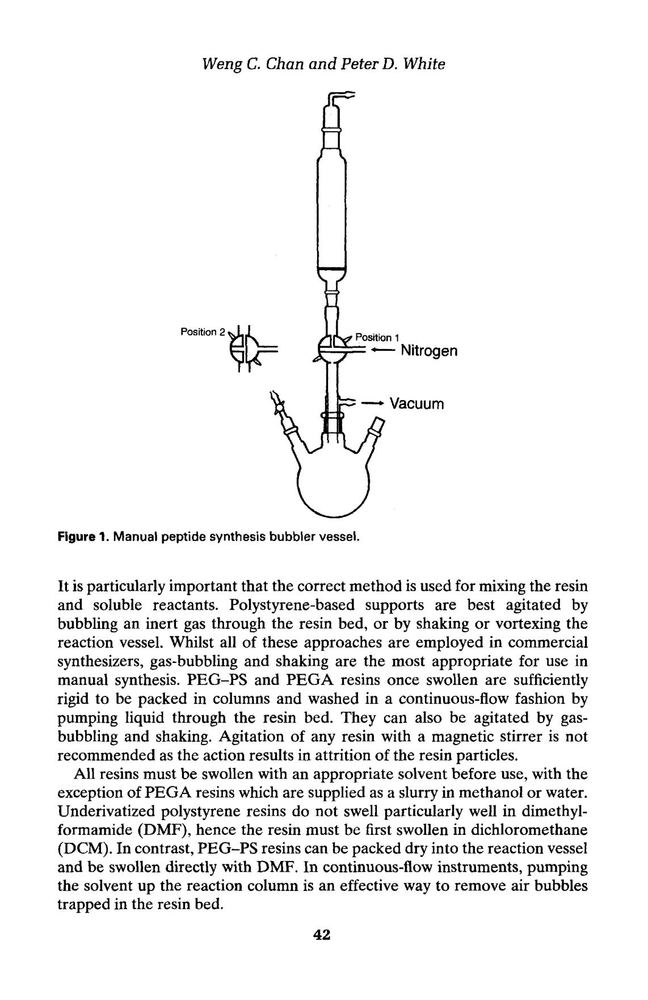
Figure 1. 手动肽合成鼓泡反应器（bubble reactor）示意图
手工合成的优势与局限：
优势：设备成本低，操作灵活，可随时监测反应，适合方法开发和中小规模合成。
局限：耗时耗力，对操作者技术要求较高，通量有限。
规模：通常用于 0.1-5 mmol 规模的合成。
树脂（resin）是 SPPS 的固相载体，其正确处理是合成成功的首要前提。本章中 Protocol 1 描述了基本的树脂处理操作流程。
树脂在使用前必须充分溶胀。溶胀过程使交联聚苯乙烯（cross-linked polystyrene）骨架的网状结构展开，增加树脂珠（resin bead）内部的溶剂可及体积，从而使后续的化学反应能够在树脂珠内部充分进行。
溶胀溶剂：通常使用 DCM（二氯甲烷），因为聚苯乙烯树脂在 DCM 中溶胀程度最大。
溶胀时间：至少 30 分钟，建议 1-2 小时以确保完全溶胀。
溶胀比例：典型溶胀比例为 1 g 干树脂加入 5-10 mL DCM。
操作：将干树脂加入反应器中，加入足量 DCM 淹没树脂，间歇性氮气鼓泡搅拌。
| ⚠️ 溶胀不充分的后果 如果树脂溶胀不充分，树脂珠内部的反应位点无法被试剂有效接触，将导致偶联不完全（incomplete coupling）、低产率和杂质累积。这是 SPPS 失败最常见的原因之一。 |
|---|
DCM 溶胀后，需要将溶剂转换为反应溶剂 DMF（N,N-二甲基甲酰胺），因为大多数 SPPS 反应在 DMF 中进行。
DMF 洗涤：3-5 次，每次使用约 3-5 倍树脂体积的 DMF。
每次洗涤：加入 DMF → 氮气鼓泡 1-2 分钟 → 排出液体。
目的：完全去除 DCM，使树脂微环境转换为 DMF 体系。
树脂用量根据目标肽的量和树脂的负载量（loading capacity, substitution level）计算。
计算公式：
树脂质量 (g) = 目标肽量 (mmol) ÷ 树脂负载量 (mmol/g)
例：需合成 0.5 mmol 肽，树脂负载量为 0.5 mmol/g → 需 1.0 g 树脂
📋 Protocol 1: 基本树脂处理操作
1. 称取所需量的干树脂，加入鼓泡反应器中。
2. 加入足量 DCM（约 5-10 mL/g 树脂），使树脂完全浸没。
3. 室温下溶胀至少 30 分钟（建议 1-2 小时），间歇性氮气鼓泡。
4. 溶胀完成后，排出 DCM（通过烧结玻璃滤板过滤）。
5. 加入 DMF（约 5 mL/g 树脂），氮气鼓泡 1-2 分钟，排出。重复 3-5 次。
6. 树脂现在已准备好进行下一步操作（功能化或第一个残基连接）。
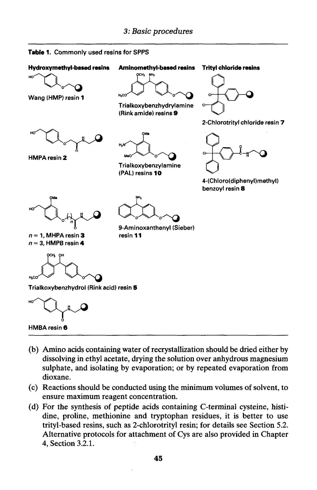
Table 1. SPPS 常用树脂总结（Commonly Used Resins in SPPS）
Table 1 总结了 SPPS 中常用的各类树脂，包括其化学性质、 linker 类型、负载量和适用范围。选择合适的树脂是合成设计的第一个关键决策——它决定了 C-末端的功能基团（游离酸 vs 酰胺）、切割条件以及合成的整体策略。
在某些情况下，研究者需要自行制备功能化树脂（functionalized resin），而非购买商品化的预负载树脂。氨甲基聚苯乙烯树脂（aminomethyl polystyrene resin）是最基础的氨基酸载体之一。
氨甲基树脂的制备通常通过 Friedel-Crafts 反应（Friedel-Crafts reaction）实现：在 Lewis 酸催化剂（如 SnCl₄）存在下，用 N-protected amino methyl chloride （如 phthalimidomethyl chloride）对聚苯乙烯树脂进行亲电取代反应，在苯环上引入氨甲基。
关键点：
功能化程度（即引入的氨基密度）决定了树脂的最终负载量。
大多数情况下，推荐购买商品化树脂，因为自制树脂的批次重现性较难控制。
商品化树脂通常已经过严格的质量控制，负载量精确已知。
第一个氨基酸残基连接到树脂上（通常称为"上载"或"loading"）是 SPPS 中最关键的步骤之一。上载的质量直接决定了合成的最终产率和纯度。第一个残基的连接方式取决于所用树脂的类型。
羟甲基树脂（hydroxymethyl resins）如 Wang resin（王氏树脂）通过酯键（ester bond）连接第一个氨基酸。由于羟基与羧基形成酯键是热力学不利的反应，需要特殊的活化策略。本章介绍了三种主要的上载方法：
对称酸酐法是最经典的上载方法。其原理是：两分子 Fmoc-氨基酸与一分子 DIC（N,N'-二异丙基碳二亚胺）反应，生成对称酸酐（symmetric anhydride），然后与树脂上的羟甲基反应形成酯键。
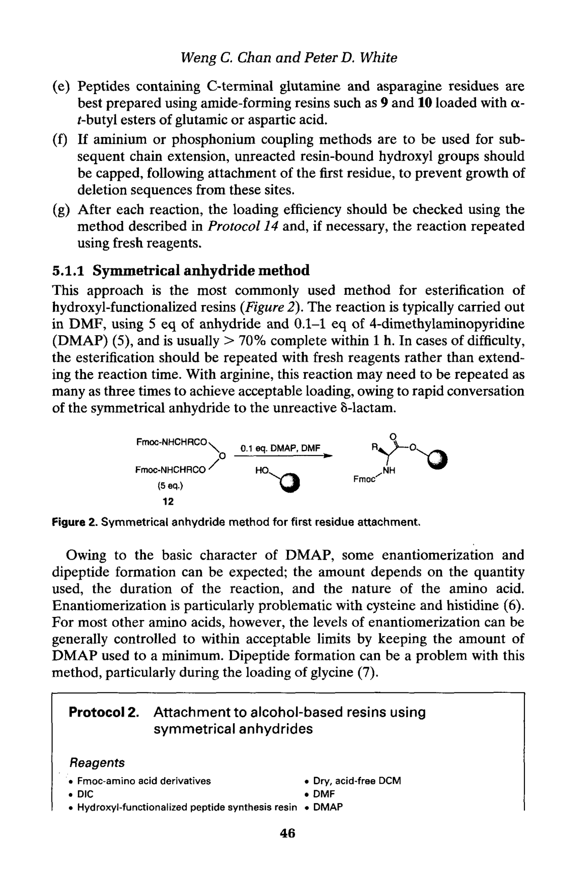
Figure 2. 对称酸酐法第一个残基连接示意图
反应机理：
Step 1：2 × Fmoc-AA-OH + DIC (1 eq.) in DCM → 对称酸酐 + DCU (二环己基脲)↓
Step 2：过滤去除 DCU 沉淀
Step 3：将对称酸酐溶液加入树脂 + DMAP (4-二甲氨基吡啶) 催化剂
Step 4：对称酸酐与树脂 -OH 反应形成酯键，释放一分子 Fmoc-AA-OH
DMAP 的作用：
DMAP 是一种亲核催化剂（nucleophilic catalyst），通过形成高活性的酰基吡啶鎓中间体（acylpyridinium intermediate）来加速酯化反应。
| ⚠️ 对称酸酐法的缺点 (1) 浪费 1 当量氨基酸——只有一半的氨基酸连接到树脂上，另一半以游离酸形式释放。 (2) 对于 Gly（甘氨酸），容易形成二肽（dipeptide, Fmoc-Gly-Gly-OH）副产物。 (3) DMAP 可能导致某些氨基酸（如 Cys）发生消旋化（racemization）。 |
|---|
📋 Protocol 2: 对称酸酐法上载羟甲基树脂
1. 在 DCM 中溶胀树脂（Protocol 1）。
2. 取 2 eq. Fmoc-AA-OH 溶于少量 DCM 中，加入 1 eq. DIC，搅拌 5 分钟形成对称酸酐。
3. 过滤去除生成的 DCU 沉淀。
4. 将对称酸酐溶液加入树脂中，加入 0.1 eq. DMAP（溶于 DMF）。
5. 氮气鼓泡反应 1-2 小时（或过夜）。
6. 排出反应液，用 DMF × 5、DCM × 5、MeOH × 3 依次洗涤。
7. 真空干燥树脂，取少量进行上载量测定（Protocol 14）。
8. （可选）剩余未反应的 -OH 用 Ac₂O/DIPEA/DMF 进行封端（capping）。
DCB 法使用 2,6-二氯苯甲酰氯（2,6-dichlorobenzoyl chloride, DCB）作为活化试剂。DCB 与 Fmoc-氨基酸反应生成活性混合酸酐（mixed anhydride），然后与树脂上的羟甲基反应。2,6-二氯取代的位阻效应抑制了消旋化。
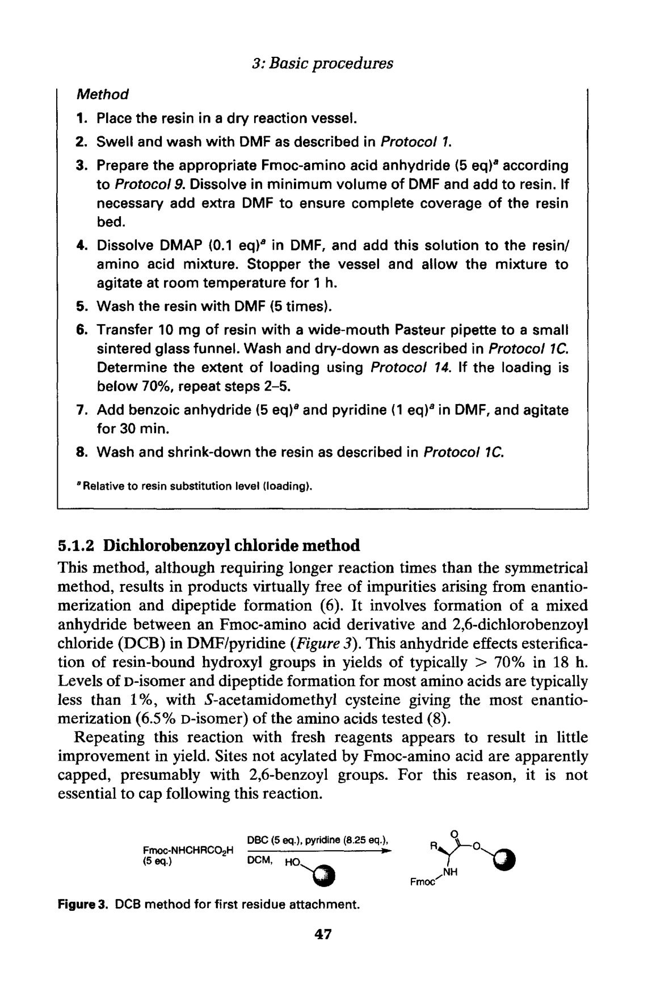
Figure 3. DCB 法第一个残基连接示意图
反应特点：
Fmoc-AA-OH + DCB + DIPEA → 活性混合酸酐中间体
混合酸酐与树脂 -OH 反应形成酯键
2,6-二氯基团提供了位阻保护，减少消旋化
副产物 2,6-二氯苯甲酸容易去除
优点：相对于对称酸酐法，不浪费氨基酸；消旋化较低
📋 Protocol 3: DCB 法上载羟甲基树脂
1. 在 DCM 中溶胀树脂。
2. 取 3-5 eq. Fmoc-AA-OH 溶于 DCM 中，加入 3-5 eq. DIPEA。
3. 冷却至 0°C，缓慢加入 3-5 eq. DCB（2,6-dichlorobenzoyl chloride）。
4. 将混合物加入树脂中，室温反应 1-2 小时。
5. 排出反应液，用 DCM × 5、DMF × 5、DCM × 5、MeOH × 3 洗涤。
6. 真空干燥，测定上载量。
MSNT（1-(均三甲苯基-2-磺酰)-3-硝基-1H-1,2,4-三唑）是一种强活化试剂，与 Melm（1-甲基咪唑, 1-methylimidazole）联合使用，可将 Fmoc-氨基酸活化为高活性的三唑酯中间体。
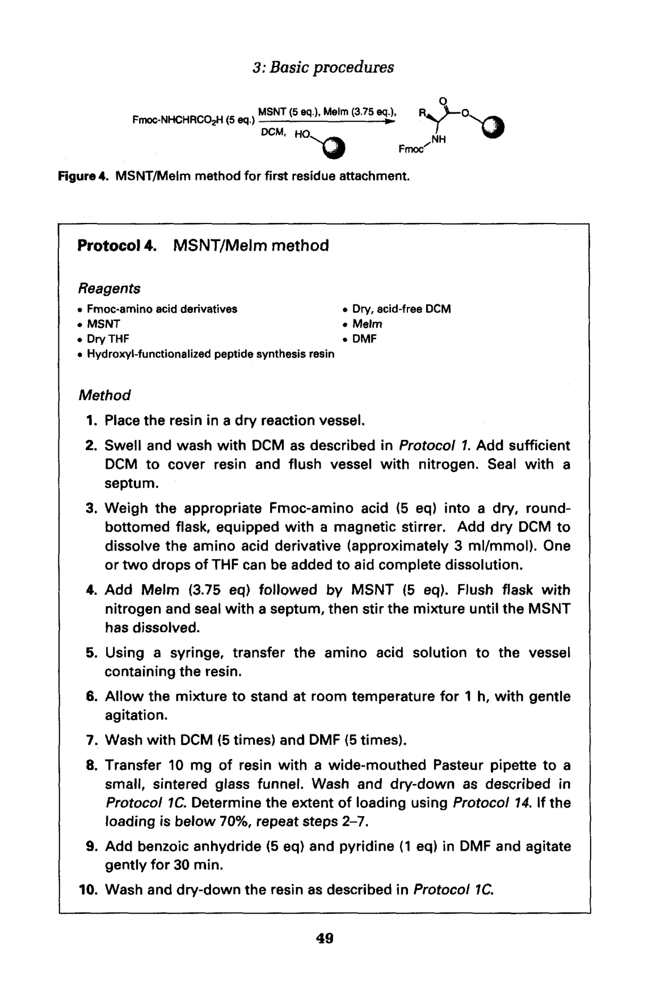
Figure 4. MSNT/Melm 法第一个残基连接示意图
反应特点：
Fmoc-AA-OH + MSNT + Melm → 活性三唑酯中间体
三唑酯与树脂 -OH 反应形成酯键
MSNT 的均三甲苯基提供了位阻保护
优点：消旋化极低，是目前推荐的羟甲基树脂上载方法之一
📋 Protocol 4: MSNT/Melm 法上载羟甲基树脂
1. 在 DCM 中溶胀树脂。
2. 取 3 eq. Fmoc-AA-OH 溶于 DCM 中。
3. 加入 3 eq. MSNT（溶于少量 DMF）和 3 eq. Melm。
4. 将混合物加入树脂中，室温反应 1 小时。
5. 排出反应液，重复步骤 2-4 一次（双偶联确保完全上载）。
6. 用 DCM × 5、DMF × 5、DCM × 5、MeOH × 3 洗涤。
7. 真空干燥，测定上载量。
三苯基型树脂（trityl-type resins）包括 2-chlorotrityl chloride (2-CTC) 树脂和三苯基醇树脂（trityl alcohol resin）。这些树脂通过酸不稳定的 trityl 酯键连接氨基酸，具有极低的消旋化和温和的上载条件。
2-CTC 树脂的上载：
2-CTC 树脂上的活泼氯（Cl）可以直接与 Fmoc-氨基酸的羧基氧发生亲核取代反应，形成 trityl 酯键。反应条件极为温和——只需要在 DCM 中加入 DIPEA 作为碱，室温反应即可。
Fmoc-AA-OH + 2-CTC-Cl resin + DIPEA in DCM → Fmoc-AA-O-Trt resin
反应条件温和，几乎不发生消旋化（<0.1%）
通常使用 1.2-2.0 eq. 氨基酸
反应后用 MeOH 封闭未反应的 Cl
三苯基醇树脂的氯化和上载（Protocol 5）：
如果使用的是三苯基醇树脂（trityl alcohol resin，即 -OH 形式），需要先用乙酰氯（AcCl）或 SOCl₂ 将其转化为氯代三苯基树脂（trityl chloride resin），然后再进行上载。
📋 Protocol 5: 三苯基醇树脂的氯化和上载
1. 树脂溶胀：DCM 中溶胀 30 分钟。
2. 氯化：加入 AcCl/DCM 或 SOCl₂/DCM，室温反应 1-2 小时，将 -OH 转化为 -Cl。
3. 洗涤：DCM × 5，充分去除过量氯化试剂。
4. 上载：加入 Fmoc-AA-OH (1.2-2.0 eq.) + DIPEA (3-5 eq.) in DCM，室温反应 1-2 小时。
5. 封闭：加入 MeOH/DIPEA/DCM，反应 15 分钟，封闭未反应的 -Cl。
6. 洗涤：DCM × 5、DMF × 5、DCM × 5、MeOH × 3。
7. 真空干燥，测定上载量。
| 💡 2-CTC 树脂的优势 (1) 极低消旋化——trityl 阳离子的位阻效应抑制了oxazolone形成。 (2) 温和切割条件——可用 1% TFA/DCM 或 AcOH/TFE/DCM 切割，保留侧链保护基。 (3) 适合合成含敏感氨基酸（Cys, His）的肽段。 (4) 是片段缩合（fragment condensation）的首选树脂。 |
|---|
氨基功能化树脂（如 Rink Amide AM resin, Rink Amide MBHA resin）表面已经具有游离氨基。这些树脂通过 linker（连接臂）与氨基酸形成酰胺键，操作最为简单——直接使用标准偶联方法（如 DIC/HOBt）将第一个氨基酸连接到树脂氨基上即可。
上载量测定：使用 Protocol 14——Fmoc 定量法。原理是测量 Fmoc 脱保护后释放的 dibenzofulvene-哌啶加合物在 290 nm（或 301 nm）的 UV 吸收值，从而精确计算树脂上的氨基上载量。
Fmoc（9-fluorenylmethoxycarbonyl）保护基的去除是 SPPS 循环的核心步骤之一。Fmoc 基团在碱性条件下通过 β-消除（β-elimination）机制被去除，释放出 dibenzofulvene（二苯并富烯）和 CO₂。
标准条件：20% (v/v) 哌啶（piperidine）/ DMF 溶液。哌啶既作为碱催化 β-消除，又作为亲核试剂捕获活泼的 dibenzofulvene，防止其与脱保护的氨基发生 Michael 加成（逆反应）。
典型操作（Protocol 6）：
第一次处理：20% 哌啶/DMF，反应 5 分钟——快速去除大部分 Fmoc
排出，DMF 洗涤 1 次
第二次处理：20% 哌啶/DMF，反应 10 分钟——确保完全去除
排出，DMF 充分洗涤 × 6-8 次
两步处理的原理：
第一步短时间处理（5 min）去除约 90-95% 的 Fmoc，同时避免长时间暴露导致可能的副反应。第二步较长时间处理（10 min）确保残留的 Fmoc 被完全去除，特别是对于位阻较大的残基（如 Val, Ile 的 N-末端 Fmoc）。
| ⚠️ 哌啶质量的重要性 哌啶（piperidine）的质量直接影响脱保护效率！ • 使用新鲜蒸馏的哌啶，避免氧化物和杂质。 • 哌啶易被氧化形成哌啶-N-氧化物，降低脱保护效率。 • 储存的 20% 哌啶/DMF 溶液建议一周内用完。 • 如果溶液变黄或出现沉淀，应立即更换。 |
|---|
对于含有敏感序列的肽（如含 Asp-Gly 容易发生 aspartimide 形成的序列），可以使用较温和的脱保护条件：
2% DBU + 2% 哌啶/DMF：DBU（1,8-diazabicyclo[5.4.0]undec-7-ene）是更强的碱（pKa 24.3 in MeCN），使用低浓度即可有效去除 Fmoc，同时减少 aspartimide 副反应。少量哌啶仍需保留以捕获 dibenzofulvene。
1% DBU/DMF：更温和的条件，但需要更长时间（2 × 10 min）。
HPIP（1-methylpyrrolidine）：非亲核碱，可减少某些副反应。
📋 Protocol 6: 手工去除 Fmoc 基团
1. 在通风橱中配制 20% (v/v) 哌啶/DMF 溶液（现配现用为佳）。
2. 将脱保护溶液加入含 Fmoc-树脂的反应器中（约 5-10 mL/g 树脂）。
3. 氮气鼓泡，室温反应 5 分钟。
4. 排出反应液（注意：含有 dibenzofulvene-哌啶加合物，有刺激性气味）。
5. 用 DMF 洗涤树脂 1 次。
6. 再次加入 20% 哌啶/DMF，反应 10 分钟。
7. 排出反应液。
8. 用 DMF 充分洗涤树脂 × 6-8 次（每次 5 mL/g，鼓泡 1 分钟）。
9. （可选）取少量树脂进行茚三酮检测（Protocol 13），应显示强阳性（蓝色）。
偶联（coupling）是 SPPS 中形成酰胺键的关键步骤。在 Fmoc SPPS 中，需要将 N-α-Fmoc 保护的氨基酸的羧基活化（activation），使其与树脂上的游离氨基反应形成肽键。本章详细介绍了多种活化/偶联方法。
DIC（N,N'-diisopropylcarbodiimide）/ HOBt（1-hydroxybenzotriazole）法是 Fmoc SPPS 中最常用的标准偶联方法。
反应机理：
Fmoc-AA-OH + HOBt → 氢键复合物或 HOBt 酯
DIC 作为缩合剂，活化羧基：Fmoc-AA-OH + DIC → O-acylisourea 中间体
O-acylisourea + HOBt → Fmoc-AA-OBt（HOBt 活性酯）+ DIU（二异丙基脲）
Fmoc-AA-OBt + resin-NH₂ → 肽键 + HOBt（再生）
HOBt 的多重作用：
抑制消旋化（racemization suppression）：通过快速形成 OBt 酯，避免了 O-acylisourea 重排为 N-acylurea，同时减少了 oxazolone 形成。
提高反应速率：OBt 酯比 O-acylisourea 更稳定但仍有足够的反应活性。
减少副反应：有效减少了氨基酸自身消旋和 N→O 酰基迁移。
典型条件：
Fmoc-AA-OH : DIC : HOBt = 1 : 1 : 1（摩尔比），通常使用 3-5 eq.（相对于树脂负载量）
溶剂：DMF（有时用 NMP）
预活化时间：1-2 分钟（将氨基酸、HOBt 溶于 DMF，加入 DIC，观察轻微浑浊为 DIU）
偶联时间：常规 30-60 分钟；困难序列（difficult sequences）可能需要 2-4 小时或双偶联
浓度：氨基酸浓度应足够高（0.1-0.3 M），以推动反应完全
📋 Protocol (DIC/HOBt 偶联法)
1. 称取 3-5 eq. Fmoc-AA-OH 和 3-5 eq. HOBt·H₂O，溶于适量 DMF 中。
2. 加入 3-5 eq. DIC，轻轻搅拌 1-2 分钟（预活化，溶液可能略微变浑浊为 DIU 沉淀）。
3. 将活化混合物加入已脱保护并洗涤好的树脂中。
4. 氮气鼓泡，室温反应 30-60 分钟。
5. 排出反应液，DMF 洗涤 × 3。
6. 取少量树脂做茚三酮检测（Protocol 13）：阴性（无色/浅黄色）= 偶联完全。
7. 如阳性（蓝色），重复步骤 1-5 进行双偶联（double coupling）。
五氟苯基酯（pentafluorophenyl ester, OPfp ester）是一种预制的活性酯。许多 Fmoc-氨基酸的 OPfp 酯可从商业来源获得，储存稳定性好。
反应特点：OPfp 酯与氨基的反应速率较慢（半衰期 30-60 min），但可以通过添加 HOBt 或 HOAt 催化加速。
优点：预制酯纯度高，无需现场活化，操作简便；特别适合自动合成器。
缺点：价格较高；反应较慢，不适合困难序列。
Protocol 8：使用 OPfp 酯的偶联——3-5 eq. Fmoc-AA-OPfp + 0.5 eq. HOBt（催化剂）+ DIPEA in DMF，反应 1-2 小时。
OXt 酯（HOBt 酯）可以现制现用：通过 DIC/HOBt 预活化制备，然后加入树脂。Protocol 7 描述了现场制备 OXt 酯的方法。
对称酸酐法在偶联步骤中也可以使用，特别是对于困难偶联。其原理与第一个残基连接时的对称酸酐法相同。
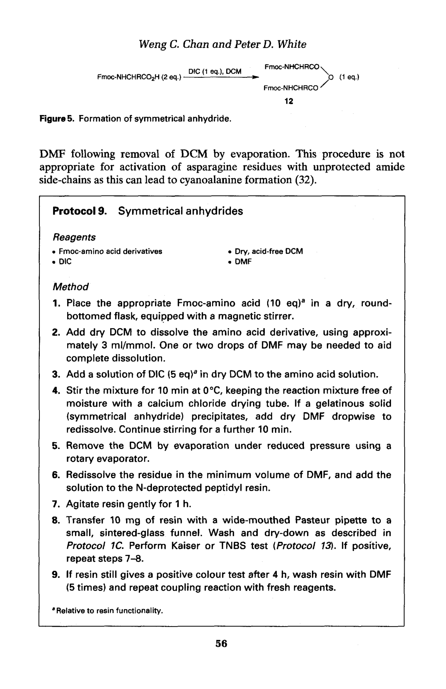
Figure 5. 对称酸酐的形成（Formation of Symmetric Anhydride）
操作流程：
2 × Fmoc-AA-OH + 1 × DIC in DCM → 对称酸酐 + DCU↓
过滤去除 DCU（二环己基脲，不溶于 DCM）
蒸发 DCM，将残余物溶于 DMF
加入树脂，反应 30-60 分钟
优缺点：
优点：反应速率快，副产物少（只有游离氨基酸），偶联效率高。
缺点：浪费 50% 的氨基酸；需要额外的制备步骤（过滤 DCU、蒸发溶剂）。
📋 Protocol 9: 对称酸酐法偶联
1. 取 2 eq. Fmoc-AA-OH（相对于树脂负载量的 6-10 eq.）溶于 DCM 中。
2. 加入 1 eq. DIC，搅拌 5 分钟形成对称酸酐。
3. 过滤去除 DCU 沉淀（可用注射器过滤器）。
4. 蒸发 DCM（氮气流或旋蒸）。
5. 将残余对称酸酐溶于适量 DMF 中。
6. 加入树脂，氮气鼓泡反应 30-60 分钟。
7. DMF 洗涤 × 3，茚三酮检测。
TBTU（O-(benzotriazol-1-yl)-N,N,N',N'-tetramethyluronium tetrafluoroborate）是一种鎓盐型缩合剂。它将 Fmoc-氨基酸转化为相应的 OBt 活性酯，但反应速率比 DIC/HOBt 更快。
Fmoc-AA-OH + TBTU + HOBt + DIPEA in DMF → Fmoc-AA-OBt (原位生成)
预活化时间：2-5 分钟
偶联时间：通常 30 分钟（常规序列）到 1 小时（中等难度序列）
PyBOP 是 TBTU 的类似物（六氟磷酸盐 counter ion），效果类似
📋 Protocol 10: TBTU/HOBt 偶联法
1. 称取 3-5 eq. Fmoc-AA-OH、3-5 eq. TBTU、3-5 eq. HOBt·H₂O。
2. 溶于适量 DMF 中，加入 6-10 eq. DIPEA。
3. 预活化 2-5 分钟（溶液变为透明/微黄色）。
4. 加入已脱保护并洗涤好的树脂。
5. 氮气鼓泡，室温反应 30-60 分钟。
6. DMF 洗涤 × 3，茚三酮检测。
HATU（O-(7-azabenzotriazol-1-yl)-N,N,N',N'-tetramethyluronium hexafluorophosphate）与 HOBt/TBTU 类似，但使用 HOAt（1-hydroxy-7-azabenzotriazole）作为离去基团。HOAt 中氮杂原子的邻位氮效应（neighboring group effect）使其活性更高。
Fmoc-AA-OH + HATU + DIPEA in DMF → Fmoc-AA-OAt（9-氮杂苯并三唑酯）
活性比 OBt 酯高约 10 倍
特别适用于困难偶联：N-烷基氨基酸（N-methyl amino acids）、α,α-二取代氨基酸、位阻大的残基对
消旋化低
📋 Protocol 11: HATU 偶联法
1. 称取 3-5 eq. Fmoc-AA-OH 和 2.5-4 eq. HATU。
2. 溶于 DMF 中，加入 6-10 eq. DIPEA。
3. 预活化 1-2 分钟（溶液变黄色）。
4. 加入树脂，室温反应 30-60 分钟。
5. DMF 洗涤 × 3，茚三酮检测。
6. 注意：HATU 用量略少于氨基酸（HATU:AA ≈ 0.8-0.9:1），以避免过量 HATU 将树脂上的氨基转化为四甲基脲衍生物。
酰氟（acyl fluoride）是一种高度稳定但仍有足够活性的氨基酸活化形式。使用 TFFH（tetramethylfluoroformamidinium hexafluorophosphate）作为氟化试剂，可在原位将 Fmoc-氨基酸转化为酰氟。
Fmoc-AA-OH + TFFH + DIPEA in DMF → Fmoc-AA-F (酰氟)
酰氟在 DMF 中非常稳定（半衰期 >24h），可以预先大量制备
特别适用于 N-烷基氨基酸（N-methyl-AA）的偶联——这类残基用常规方法很难偶联
与 HATU 联用效果更佳
📋 Protocol 12: TFFH 酰氟法偶联
1. 称取 3-5 eq. Fmoc-AA-OH，溶于 DMF 中。
2. 加入 3-5 eq. TFFH 和 6-10 eq. DIPEA。
3. 预活化 5-10 分钟（生成酰氟）。
4. 加入树脂，室温反应 1-2 小时。
5. DMF 洗涤 × 3，茚三酮检测。
6. 对于 N-甲基氨基酸，建议双偶联或三偶联。
肽链组装是 SPPS 的核心循环过程。从 C-末端氨基酸开始，通过反复的"脱保护-洗涤-偶联-洗涤"循环，逐个向 N-端方向延伸肽链。Table 2 总结了添加一个氨基酸残基的典型反应循环。
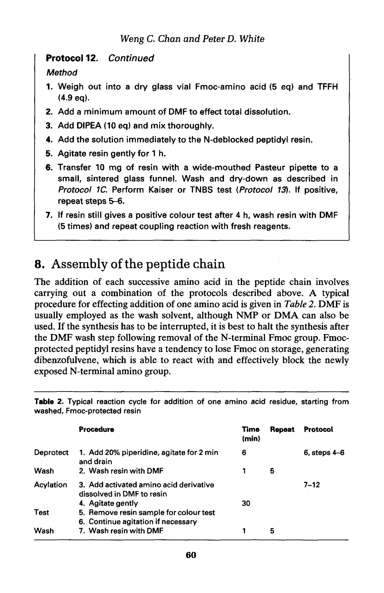
Table 2. 添加一个氨基酸残基的典型反应循环
完整循环详解：
| 步骤 | 操作 | 溶剂/试剂 | 时间/次数 |
|---|---|---|---|
| 1 | 洗涤 (Wash) | DMF | × 3 (每次 1 min) |
| 2 | Fmoc 脱保护 (Deprotection) | 20% 哌啶/DMF | 5 min + 10 min |
| 3 | 充分洗涤 (Extensive Wash) | DMF | × 6-8 (每次 1 min) |
| 4 | 偶联 (Coupling) | Fmoc-AA-OH + 活化试剂 / DMF | 30-60 min |
| 5 | 洗涤 (Wash) | DMF | × 3 |
| 6 | 定性检测 (Monitoring) | 茚三酮/TNBS/溴酚蓝 | 2-3 min |
| 7 | 封端 (Capping, 可选) | Ac₂O/DIPEA/DMF | 5-10 min |
| ⚠️ 关键注意事项 1. 步骤 3（脱保护后洗涤）最为关键！哌啶必须完全去除，否则会与下一个氨基酸的活化酯反应，导致偶联失败。建议至少 DMF 洗涤 6 次。 2. 步骤 6 的茚三酮检测非常重要：如果显蓝色，说明有未反应的游离胺，需要双偶联。 3. 封端（capping）可以防止未反应的氨基在后续循环中继续反应，从而减少缺失序列杂质（deletion peptides）。 |
|---|
困难序列（Difficult Sequences）的处理：
困难序列通常表现为偶联不完全，茚三酮持续阳性。
可能原因：肽链在树脂上的聚集（aggregation）/β-折叠形成，掩埋了 N-末端氨基。
对策：(1) 双偶联（double coupling）；(2) 使用更强活化的试剂（HATU）；(3) 升高温度；(4) 使用Chaotropic盐（如 LiCl）；(5) 改用 pseudoproline 二肽构建单元。
在 SPPS 循环中，快速检测树脂上是否有游离氨基（未反应的胺）是监控偶联效率的关键手段。Protocol 13 描述了三种常用的定性检测方法。
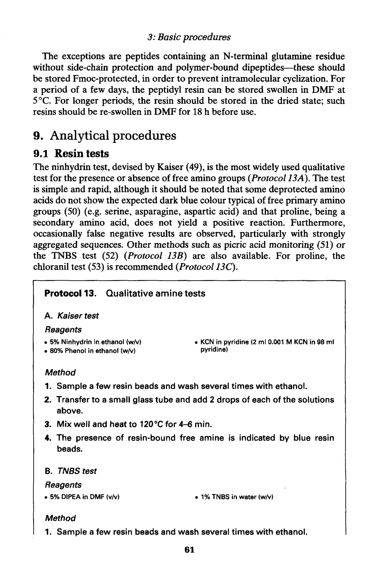
Protocol 13 (第1页): 定性胺检测——茚三酮试验和TNBS试验
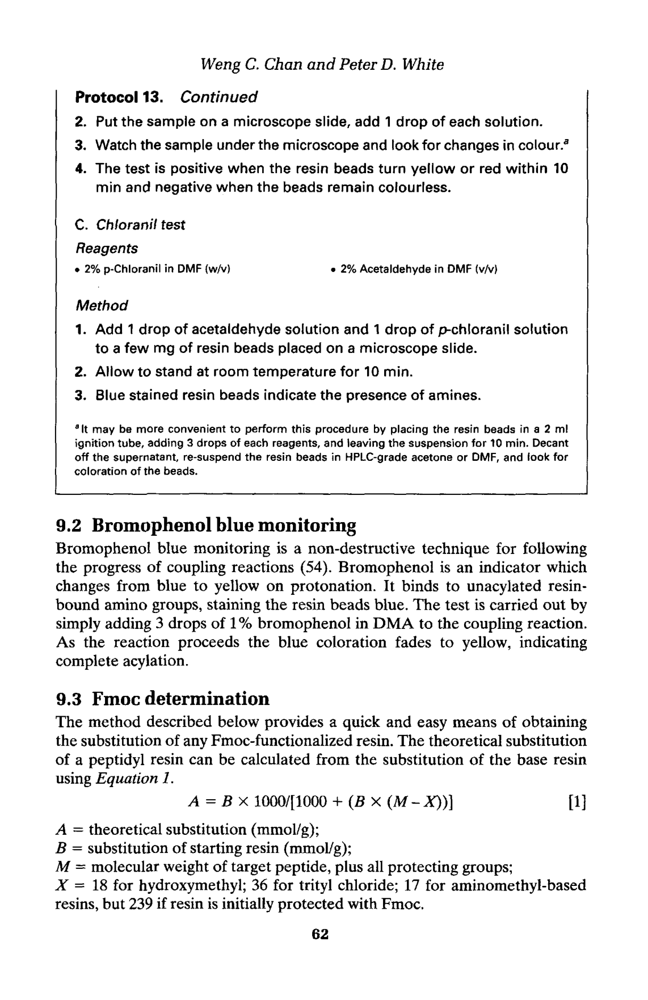
Protocol 13 (第2页): 定性胺检测——茚三酮试验和TNBS试验
茚三酮试验（又称 Kaiser test）是 SPPS 中最经典的定性检测方法，由 Kaiser 等人于 1970 年开发。其原理是：游离的一级胺（primary amine）与茚三酮（ninhydrin）在高温下反应，生成 Ruhemann's purple（鲁赫曼紫，λmax = 570 nm）。
试剂配制（三种溶液）：
| 试剂 | 组成 | 配制 |
|---|---|---|
| 试剂 A | 80% (w/v) 苯酚 (phenol) in 乙醇 (ethanol) | 加热溶解苯酚于乙醇中 |
| 试剂 B | 0.001 M KCN in 吡啶 (pyridine) / 苯酚 | KCN 溶于少量水中，再用吡啶稀释（剧毒！通风橱操作！） |
| 试剂 C | 0.5 M 茚三酮 (ninhydrin) in 乙醇 | 茚三酮溶于无水乙醇 |
检测步骤：
取少量树脂珠（5-10 粒）放入小玻璃试管中。
分别加入试剂 A、B、C 各 2-3 滴。
在 100-110°C 加热 5 分钟（或沸水浴中加热 1-2 分钟）。
观察颜色变化。
结果判读：
| 颜色 | 含义 | 说明 |
|---|---|---|
| 深蓝色 (Intense Blue) | 强阳性（Strong Positive） | 存在大量游离一级胺——偶联不完全 |
| 无色/浅黄色 (Colorless) | 阴性（Negative） | 无游离胺——偶联完全 ✓ |
| 红色/棕色 (Red/Brown) | Pro/二级胺阳性 | Proline 的二级胺或 N-烷基胺的特殊显色 |
| ⚠️ KCN 剧毒！ 试剂 B 中含有 KCN（氰化钾），为剧毒化学品！ • 必须在通风橱中配制和使用。 • 避免接触酸（会产生 HCN 剧毒气体）。 • 废液需按规定收集处理，不可直接倒入下水道。 • 替代方案：可使用无毒的 chloranil test（对氯苯醌试验）替代。 |
|---|
TNBS（2,4,6-三硝基苯磺酸）试验是茚三酮试验的补充方法。TNBS 与一级胺反应生成红色/橙色（λmax ≈ 335 nm）的三硝基苯基衍生物。
检测对象：一级胺（primary amine）。
灵敏度：对一级胺的检测灵敏度比茚三酮更高。
Proline 不反应：TNBS 不与二级胺反应，因此 Proline 不会产生阳性结果。
操作：取少量树脂，加 1 滴 1% TNBS/DMF 溶液，室温观察 5 分钟。
结果：游离胺存在 → 红色/橙色（阳性）；无游离胺 → 无色/浅黄色（阴性）。
溴酚蓝（bromophenol blue, BPB）是一种酸碱指示剂，在酸性条件下为黄色，结合游离胺后变为蓝色。它可以用于实时监测偶联反应进程。
在偶联混合物中加入少量 BPB（0.1 mL of 1% BPB/DMF）。
初始蓝色（游离胺存在）→ 随着偶联进行逐渐变为黄色/无色（胺被消耗）。
优点：不需取样加热，可实时监控。
缺点：灵敏度不如茚三酮，只能作为快速筛查工具。
Protocol 14 描述了通过 UV 定量法精确测定第一个残基连接程度的方法。这是评估树脂上载效率的标准方法。
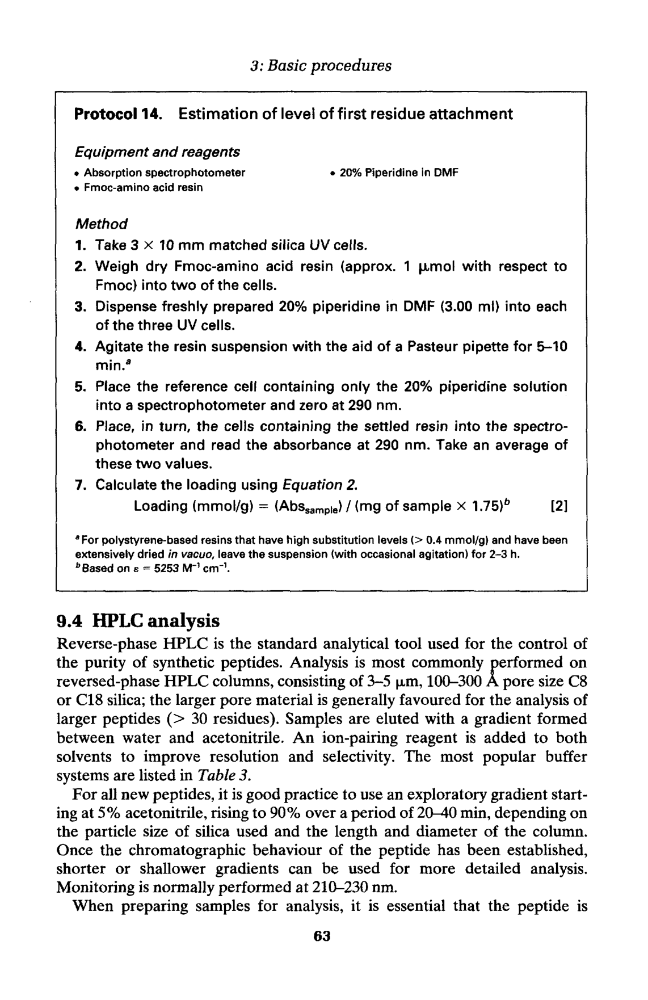
Protocol 14: 第一个残基连接程度的估算
原理：
用 20% 哌啶/DMF 处理负载了 Fmoc-第一个残基的树脂，释放的 dibenzofulvene-哌啶加合物在 290 nm（或 301 nm）处有特征吸收。通过测定脱保护液的 UV 吸光度，可以精确计算树脂上的 Fmoc 含量，从而得出上载量。
计算公式：
上载量 (mmol/g) = (A₂₉₀ × 稀释倍数 × V) / (ε × m)
其中：A₂₉₀ = 290 nm 吸光度；V = 脱保护液总体积 (mL)；ε = 消光系数 (≈ 5253 L·mol⁻¹·cm⁻¹ at 290 nm, 或 ≈ 7800 at 301 nm)；m = 树脂质量 (mg)
📋 Protocol 14: Fmoc 定量法测定上载量
1. 准确称取 5-10 mg 已上载 Fmoc-氨基酸的树脂，放入小柱或 EP 管中。
2. 加入 2 mL 20% 哌啶/DMF，室温反应 30 分钟（确保 Fmoc 完全去除）。
3. 收集洗脱液，用 DMF 定容至已知体积（如 10 mL）。
4. 适当稀释后，在 290 nm（或 301 nm）测定 UV 吸光度。
5. 使用消光系数计算上载量。
在合成过程中，可以取少量树脂进行小量切割（mini-cleavage），然后通过 RP-HPLC（反相高效液相色谱）分析粗产物的纯度。
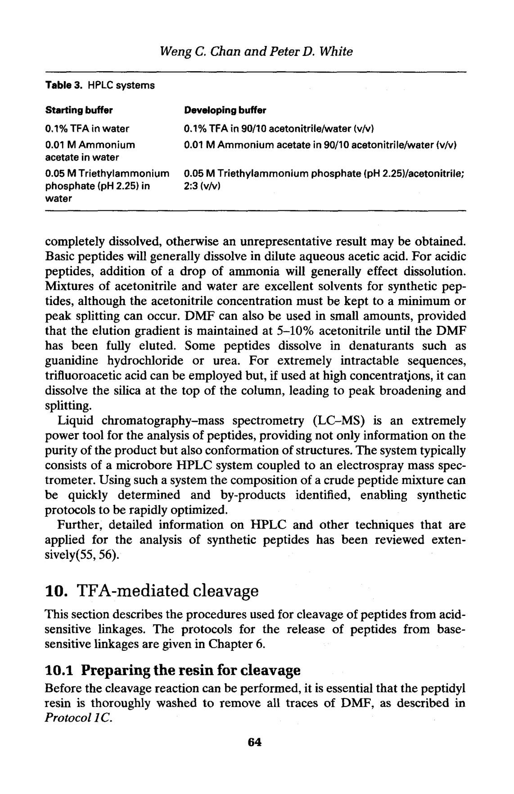
Table 3. HPLC 系统
Table 3 总结了常用的 HPLC 分析系统配置。典型的分析条件包括：
色谱柱：C18 反相柱（如 4.6 × 250 mm, 5 μm, 300 Å）
流动相 A：0.1% TFA in H₂O
流动相 B：0.1% TFA in CH₃CN（乙腈）
梯度：5% → 60% B over 30-40 min
流速：1.0 mL/min
检测波长：214 nm（肽键吸收）和 280 nm（芳香族残基）
切割（cleavage）是将合成的肽链从树脂上释放的过程，同时去除所有侧链保护基（side-chain protecting groups）。这是 SPPS 的最后一步关键操作，也是最需要谨慎的步骤之一——因为强酸条件可能导致多种副反应。
充分洗涤：合成完成后，树脂需要用 DMF、DCM、MeOH 充分洗涤，去除残留试剂和盐。
真空干燥：洗涤后的树脂需要彻底真空干燥（overnight, < 1 mbar），去除所有溶剂残留。水分的存在会影响切割效率。
切割液选择：根据肽序列中的氨基酸组成选择合适的切割液配方（特别是含有 Cys, Met, Trp, Arg 的肽）。
Table 4 是本章最重要的参考表之一，总结了针对不同氨基酸组成的切割液配方。所有配方都以 TFA 为主成分，加入不同的清道剂（scavengers）来捕获切割过程中产生的活泼阳离子中间体（如 tBu⁺, Pbf⁺ 等）。
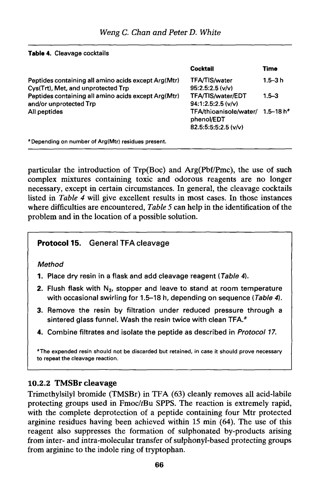
Table 4. 切割液配方（Cleavage Cocktail Formulations）
常用切割液配方总结：
| 肽序列特点 | 切割液配方 (v/v) | 反应时间 | 说明 |
|---|---|---|---|
| 标准 (Standard) | TFA/TIS/H₂O = 95:2.5:2.5 | 2-3 h, RT | 适用于不含 Cys/Met/Trp 的简单序列；TIS 是最常用的清道剂 |
| 含 Cys | TFA/EDT/TIS/H₂O = 92.5:2.5:2.5:2.5 | 2-3 h, RT | EDT 保护 Cys 的巯基免受 tBu⁺ 烷基化 |
| 含 Met | TFA/thioanisole/EDT/anisole = 90:5:3:2 | 2-3 h, RT | Met 的硫醚易被烷基化；thioanisole 是强清道剂 |
| 含 Trp | TFA/TIS/EDT/H₂O = 92.5:2.5:2.5:2.5 | 1-2 h, RT (缩短) | Trp 的吲哚环极易被烷基化和氧化；缩短反应时间 |
| 含 Arg(Pbf) | 同标准配方 | 3-4 h, RT | Pbf 保护基的去除速率较慢，需要更长时间 |
| 💡 关于清道剂 (Scavengers) TIS（三异丙基硅烷, triisopropylsilane）是目前最广泛使用的清道剂，已基本取代了早期常用的 thioanisole 和 anisole。 • TIS 优势：无臭/低臭（相比 thioanisole 的强烈大蒜味），高效，通用性好。 • TIS 通过硅-氢键还原捕获碳正离子中间体。 • EDT（乙二硫醇, 1,2-ethanedithiol）专门用于保护含硫氨基酸（Cys, Met）。 • 水（H₂O）的作用是帮助溶解极性副产物。 |
|---|
TFA 介导的切割过程中可能发生多种副反应。Table 5 详细总结了这些副反应及其对策。了解这些副反应对于优化切割条件和纯化策略至关重要。
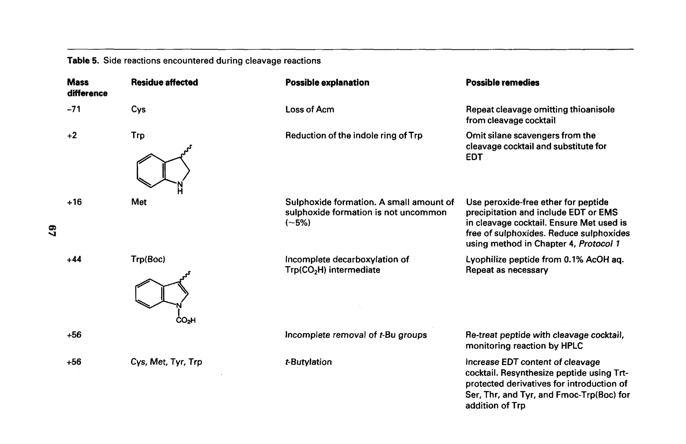
Table 5 (第1页): 切割反应中遇到的副反应
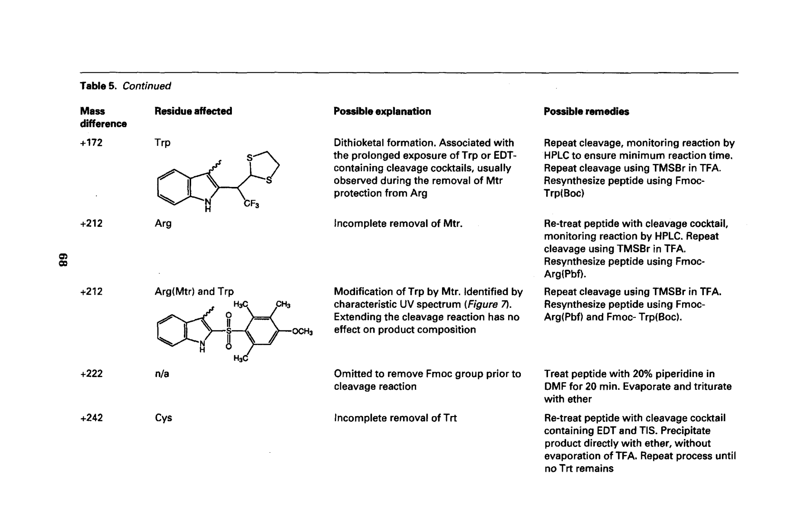
Table 5 (第2页): 切割反应中遇到的副反应
主要副反应类型：
| 副反应类型 | 受影响残基 | 对策 |
|---|---|---|
| tBu⁺ 烷基化 (tert-butylation) | Trp, Tyr, Met, Cys | 使用高效清道剂（TIS, EDT, thioanisole） |
| 三氟乙酰化 (Trifluoroacetylation) | Ser, Thr, Tyr | 缩短 TFA 处理时间；切割后立即乙醚沉淀 |
| Trp 修饰 (Tryptophan Modification) | Trp（吲哚环氧化/烷基化） | 加入强清道剂；切割前脱气；使用 TMSBr 法替代 |
| Asp-Pro 键切割 (Asp-Pro Cleavage) | Asp-Pro 序列 | 不可避免；降低 TFA 浓度或缩短时间；使用特殊 linker |
| Met 氧化 (Methionine Oxidation) | Met → Met(O) 亚砜 | 切割液脱气；氮气保护；纯化后用 NH₄I/Me₂S 还原 |
对于含有多个 Trp 残基的肽，标准 TFA 切割可能导致严重的 Trp 修饰。TMSBr（三甲基溴硅烷, trimethylsilyl bromide）切割法提供了一种更温和的替代方案。
切割液：TMSBr/TFA/thioanisole/m-cresol（具体比例见 Protocol 16）
TMSBr 先将保护基转化为 TMS 酯/醚，再被 TFA 水解
反应条件比纯 TFA 更温和，有效减少 Trp 修饰
m-cresol（间甲酚）作为清道剂捕获阳离子中间体
切割完成后，需要将肽从树脂和切割液混合物中分离出来。Protocol 17 描述了标准的肽分离操作。
📋 Protocol 17: 切割后肽的分离
1. 切割反应结束后，通过烧结玻璃漏斗过滤，收集滤液（含肽的 TFA 溶液），树脂用少量 TFA 洗涤 2-3 次，合并滤液。
2. 在氮气流下浓缩 TFA 溶液至约 1-2 mL（不要蒸干！）。
3. 准备冰冷乙醚（diethyl ether, -20°C 预冷），量取约 10 倍滤液体积。
4. 将浓缩的 TFA 溶液缓慢滴加入冰冷乙醚中（或反向加入），同时搅拌。
5. 肽立即沉淀为白色/灰白色固体（如果含 Trp，可能略带黄色）。
6. 在 3000-4000 rpm 离心 5 分钟，使沉淀紧密沉降。
7. 小心倾倒上清液（含 TFA、清道剂、保护基碎片）。
8. 用冰冷乙醚洗涤沉淀 × 3（每次重新悬浮-离心）。
9. 将沉淀溶于最少量的水/乙腈（含 0.1% TFA）混合液中。
10. 冻干（lyophilize）得到蓬松的肽粉末。
| 💡 沉淀原理 肽含有多个极性基团和电荷，在极性溶剂（水、TFA）中溶解度较好，但在非极性溶剂（乙醚）中几乎不溶。将 TFA 溶液加入大量乙醚时，肽因溶解度急剧降低而析出沉淀。同时，小分子的保护基碎片、清道剂等溶于乙醚中被去除——这是一个粗纯化步骤。 |
|---|
对于含有 Trp 的肽，切割后应立即进行 UV 光谱检测，以判断 Trp 是否被修饰。
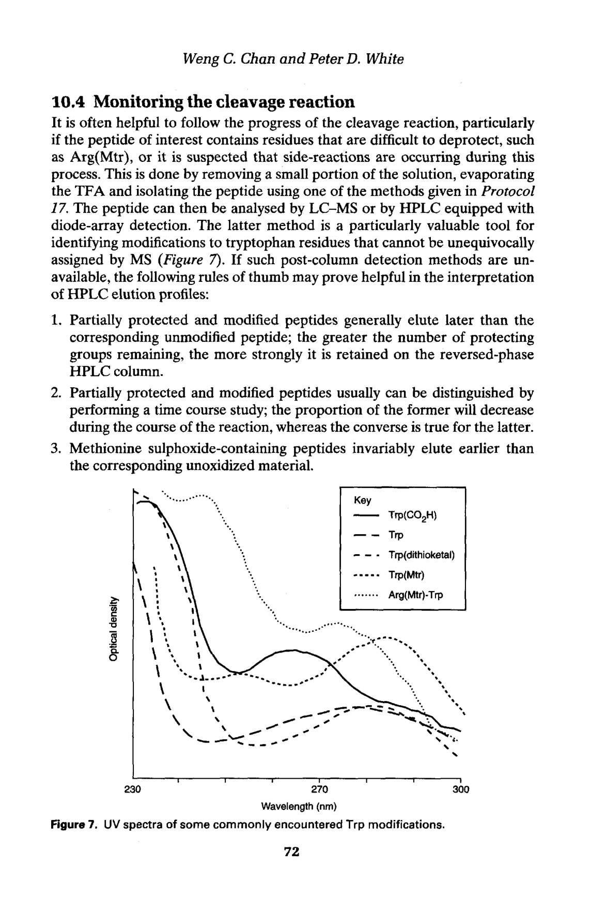
Figure 7. 常见 Trp 修饰的 UV 光谱
正常的 Trp 在 280 nm 附近有特征吸收。如果 Trp 被烷基化或氧化，UV 光谱会发生变化——吸收峰位移或出现新的吸收带。通过对比标准光谱，可以快速判断 Trp 的完整性。
对于使用 2-CTC 树脂（2-chlorotrityl chloride resin）合成的肽，可以使用稀 TFA 从树脂上释放肽段，同时保留所有侧链保护基。这是片段缩合（fragment condensation / convergent synthesis）策略的基础。
切割条件：1% TFA/DCM（v/v），室温，反应 2-5 分钟
收集滤液，重复 3-5 次直到树脂变为无色（Kaiser 检测验证）
合并滤液，立即中和或蒸发（避免长时间暴露于酸）
产物：侧链完全保护的肽段（protected peptide fragment）
用途：片段缩合——将两个保护肽段通过片段偶联（如使用 HATU 或 thioester法）连接
📋 Protocol 18: 从 2-CTC 树脂上进行稀 TFA 切割
1. 将合成完成的树脂用 DCM 充分溶胀。
2. 配制 1% TFA/DCM 溶液（现配现用）。
3. 将 1% TFA/DCM 加入反应器（约 5 mL/g 树脂），反应 2 分钟。
4. 收集滤液到一个含中和剂（如 DIPEA）的收集瓶中。
5. 重复步骤 3-4 共 5-10 次，直到树脂变为无色（可用 Kaiser 检测验证完全释放）。
6. 合并所有滤液，蒸发 DCM（氮气或旋蒸）。
7. 残余物可溶于 DMF 中，用于后续的片段偶联反应。
| ⚠️ 稀 TFA 切割的注意事项 • 每次处理时间不宜过长（< 5 min），否则可能开始去除侧链保护基。 • 滤液应立即收集到含碱（DIPEA）的容器中，中和游离 TFA。 • 产物为保护肽段，通常不溶于水/乙醚，不能用常规乙醚沉淀法分离。 • 可通过蒸发溶剂后硅胶柱层析纯化，或直接用于片段偶联。 |
|---|
Carpino, L.A. and Han, G.Y. (1972) J. Org. Chem. 37, 3404-3409. (Fmoc 保护基的原始报道)
Kaiser, E., Colescott, R.L., Bossinger, C.D. and Cook, P.I. (1970) Anal. Biochem. 34, 595-598. (茚三酮试验)
Hood, C.A., Fuentes, G., Patel, H., Page, K., Garbisa, S. and Sato, A.K. (2005) Peptides 27, 139-147. (溴酚蓝检测)
Rink, H. (1987) Tetrahedron Lett. 28, 3787-3790. (Rink Amide resin)
Wang, S.S. (1973) J. Am. Chem. Soc. 95, 1328-1333. (Wang resin)
Barlos, K., Chatzi, O., Gatos, D. and Stavropoulos, G. (1991) Int. J. Pept. Protein Res. 37, 513-520. (2-CTC resin)
Sieve, B. and Kihlberg, J. (2002) in Fmoc Solid Phase Peptide Synthesis (Chan, W.C. and White, P.D. eds), Oxford University Press, pp. 44-76. (Chapter 3)
一页速查表——打印放在实验台旁！
| DCM | Dichloromethane (二氯甲烷) |
|---|---|
| DMF | N,N-Dimethylformamide (N,N-二甲基甲酰胺) |
| NMP | N-Methyl-2-pyrrolidone (N-甲基吡咯烷酮) |
| TFA | Trifluoroacetic acid (三氟乙酸) |
| THF | Tetrahydrofuran (四氢呋喃) |
| DIPEA | N,N-Diisopropylethylamine (Hünig's base) |
| EDT | 1,2-Ethanedithiol (乙二硫醇) |
| TIS | Triisopropylsilane (三异丙基硅烷) |
| DIC | N,N'-Diisopropylcarbodiimide (碳二亚胺缩合剂) |
|---|---|
| HOBt | 1-Hydroxybenzotriazole (1-羟基苯并三唑) |
| HOAt | 1-Hydroxy-7-azabenzotriazole |
| HATU | O-(7-Azabenzotriazol-1-yl)-N,N,N',N'-tetramethyluronium PF₆ |
| TBTU | O-(Benzotriazol-1-yl)-N,N,N',N'-tetramethyluronium BF₄ |
| PyBOP | Benzotriazol-1-yl-oxytripyrrolidinophosphonium PF₆ |
| TFFH | Tetramethylfluoroformamidinium PF₆ |
| DMAP | 4-Dimethylaminopyridine (4-二甲氨基吡啶) |
| MSNT | 1-(Mesitylene-2-sulfonyl)-3-nitro-1H-1,2,4-triazole |
| DCB | 2,6-Dichlorobenzoyl chloride |
| DBU | 1,8-Diazabicyclo[5.4.0]undec-7-ene |
| Pbf | 2,2,4,6,7-Pentamethyldihydrobenzofuran-5-sulfonyl (Arg 保护基) |
✓ 树脂必须充分溶胀——这是成功的第一步。
✓ 哌啶脱保护后必须充分洗涤——残留哌啶会杀死下一步的偶联。
✓ 茚三酮检测是不可或缺的——不要跳过任何一步的监控。
✓ 偶联不完全时，立即双偶联——不要带着杂质前进。
✓ 使用新鲜的高质量溶剂和试剂——SPPS 对杂质零容忍。
✓ 切割液配方要根据序列定制——特别是含 Cys/Met/Trp 的肽。
✓ 切割后快速处理——TFA 中不要长时间放置。